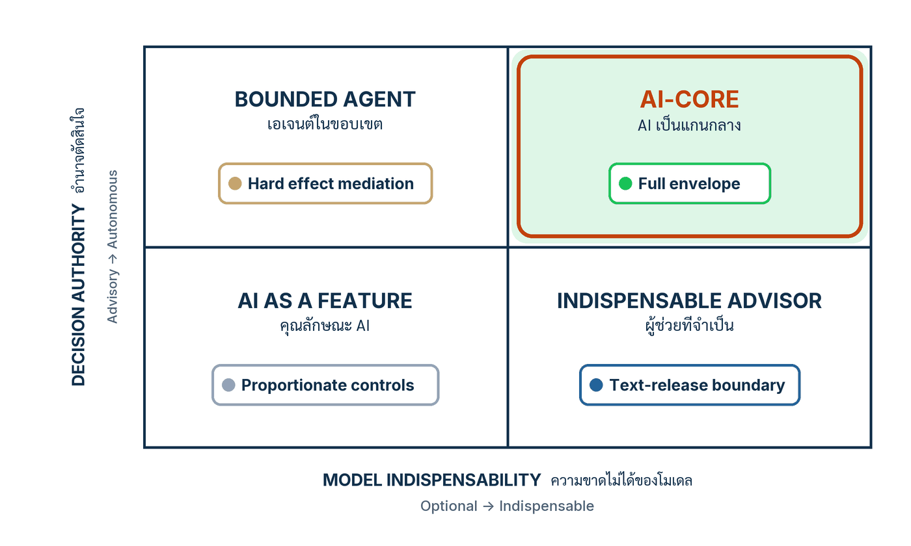

ในบทความนี้
- สี่คำที่ถูกเหมารวมเป็น "ระบบ AI" คำเดียว — และทำไมการเหมารวมทำให้ประเมินความเสี่ยงผิดราคา
- นิยามข้อ 1 ทั้งสองเงื่อนไข สองแกนที่ตั้งฉากกัน และสี่ช่องของ Table 1 พร้อมภาระผูกพันประจำช่อง
- ลงมือทำ 7 ขั้น — แยกสี่คำ ประกาศชุดงาน วัดอำนาจ ถอดโมเดลทดสอบ ประกาศเกณฑ์ วางช่อง แล้วเขียนภาระผูกพัน
- เวิร์กชีตจำแนกระบบของน้องคราม กรอกครบทุกช่อง พร้อมคำตัดสิน: AI-core
- Validation check — เจ็ดแถวผ่าน/ไม่ผ่าน แต่ละแถวชี้ artifact ที่ต้องมีอยู่จริง ไม่ใช่คำคุณศัพท์
- ก้าวต่อไป — สิ่งที่ตอนนี้จงใจยังไม่ตอบ และทำไมตอนหน้าต้องย้อนดูสามยุคของซอฟต์แวร์
In this post
- The four terms habitually flattened into one word "AI system" — and why the conflation mis-prices risk
- Definition 1 with both conditions, the two orthogonal axes, and the four Table-1 quadrants with their governing obligations
- The seven steps — separate the terms, declare the task set, measure authority, run the removal test, predeclare the threshold, place the quadrant, write down the obligation
- Nong Kram's classification worksheet, filled in end to end, with the verdict: AI-core
- Validation check — seven pass/fail rows, each pointing at an artifact that must actually exist, not an adjective
- The road ahead — what this post deliberately does not answer, and why the next one revisits the three eras of software
🤔 ถ้าปิดโมเดลของระบบคุณคืนนี้ พรุ่งนี้เช้ามีงานของใครล้มบ้าง — และคุณตอบคำถามนี้ได้ด้วยหลักฐาน หรือตอบได้แค่ด้วยความรู้สึก?
นี่คือตอนแรกของซีรีส์ 10 ตอน Engineering AI-Core Systems — คู่มือลงมือทำจากศูนย์ถึงปล่อยระบบจริง: เริ่มจากจำแนกสิ่งที่คุณมีอยู่ในมือ (ตอนนี้) ไปจนถึงวันตรวจ go-live พร้อม assurance contract, ห้ารางควบคุม และชุดทดสอบที่พิสูจน์ได้ (ตอนที่ 10) ทั้งซีรีส์เดินตาม paper ของผมเอง Engineering AI-Core Systems: A Reference Architecture and Assurance Contract for Software 3.0[1] และทุกตอนมีโครงเดียวกัน: แนวคิดจาก paper สองหัวข้อ วิธีทำ 7 ขั้น ตัวอย่างเดินเรื่องหนึ่งแอปที่สร้างต่อกันทั้งสิบตอน และตารางตรวจงานตัวเองก่อนไปต่อ
คำตอบของทั้งตอนนี้สรุปได้หนึ่งย่อหน้า: ไม่ใช่ทุกระบบที่ "ใช้ AI" จะเป็น ระบบที่มี AI เป็นแกน (AI-core system) — ป้ายนี้มีนิยามที่วัดได้และมีเงื่อนไขสองข้อ: หนึ่ง output ของโมเดลต้องกุมอำนาจส่วนใหญ่ตามที่ประกาศไว้ล่วงหน้าเหนือเนื้อหาที่ปล่อยถึงผู้ใช้ การกระทำภายนอก หรือทางแยกของ runtime และสอง เมื่อถอดโมเดลออกแล้วแทนด้วย fallback ที่ประกาศไว้ อัตราสำเร็จของงานต้องร่วงต่ำกว่าเกณฑ์ที่ประกาศไว้ล่วงหน้าเช่นกัน สองเงื่อนไขนี้คือสองแกนที่ตั้งฉากกัน มันตัดกันเป็นสี่ช่อง และแต่ละช่องแบกภาระทางวิศวกรรมไม่เท่ากัน — จบตอนนี้คุณจะมีเวิร์กชีตหนึ่งแผ่นที่บอกว่าระบบของคุณอยู่ช่องไหน และช่องนั้นเรียกร้องอะไรจากคุณบ้าง
1. สี่คำที่ถูกเหมารวม — และราคาที่ต้องจ่ายเมื่อเหมารวม
ประเด็นของหัวข้อนี้ตรงไปตรงมา: "ระบบ AI" ไม่ใช่หมวดเดียว แต่เป็นอย่างน้อยสี่หมวดที่ความเสี่ยงคนละธรรมชาติ และองค์กรส่วนใหญ่ใช้คำเดียวเรียกทั้งสี่ ผลคือประเมินความเสี่ยงผิดราคาทั้งขาขึ้นและขาลง — เข้มงวดเกินเหตุกับของที่ไม่อันตราย และปล่อยผ่านของที่อันตรายจริง
ส่วนหนึ่งของความสับสนมาจากความเร็วของยุคเอง — ยุคที่ Karpathy เรียกในทอล์กปี 2025 ว่าซอฟต์แวร์กำลังเปลี่ยนอีกครั้ง[2] เมื่อทุกอย่างถูกเรียกว่า "AI" พร้อมกัน คำศัพท์ก็แบนราบลงจนแยกไม่ออกว่าโมเดลอยู่ตรงไหนของระบบ paper จึงเปิด §1 ด้วยการแยกสี่คำนี้ออกจากกันก่อนจะนิยามอะไรทั้งสิ้น[1]
| คำ | โมเดลอยู่ตรงไหน | ตัวอย่างทั่วไป | คำถามความเสี่ยงที่ถูกต้อง |
|---|---|---|---|
| AI-assisted coding | โมเดลช่วยผลิต artifact ตอนพัฒนา — ตัวผลิตภัณฑ์ที่ปล่อยออกไปไม่จำเป็นต้องมีโมเดลอยู่เลย | ใช้ AI ช่วยเขียนโค้ดของ REST API ธรรมดา | คุณภาพของโค้ดและวินัยการรีวิวก่อน merge — ไม่ใช่พฤติกรรม runtime ของผลิตภัณฑ์ |
| Coding agent | ระบบ AI-assisted ที่ถือเครื่องมือ repo และรับมอบหมาย dev action — ประเมินกันบนงานวิศวกรรมซอฟต์แวร์ | agent ที่อ่าน issue แก้โค้ด แล้วเปิด pull request | ขอบเขตสิทธิ์ใน repo และด่านรีวิวของมนุษย์ก่อนโค้ดเข้า main |
| AI-enabled software | ระบบที่ deploy แล้วและมีฟีเจอร์ runtime อย่างน้อยหนึ่งจุดหนุนด้วยโมเดล | แอปจัดการเอกสารที่มีปุ่ม summarize | ความเสี่ยงรายฟีเจอร์ ตามอำนาจจริงของฟีเจอร์นั้น — ไม่ใช่ทั้งระบบโดยอัตโนมัติ |
| AI-core system | โมเดลอยู่ในเส้นทางหลักของงานที่ deploy แล้ว ตามนิยามข้อ 1 — สองเงื่อนไขในหัวข้อ 2 | ผู้ช่วยบริการลูกค้าที่ตอบเองและทำรายการเองได้ | ความเสี่ยงระดับระบบ — เมื่อเข้าเงื่อนไข ภาระคือ envelope เต็มรูปแบบ |
ข้อสำคัญที่ paper ย้ำคือสี่หมวดนี้ตั้งฉากกัน ไม่ใช่บันไดที่ไต่ขึ้นตามลำดับ ระบบที่ coding agent สร้างทั้งตัวอาจปล่อยโดยไม่มีโมเดลสักตัว — AI-assisted อย่างเข้ม แต่ไม่ใช่ AI-core เลย กลับกัน ระบบที่เขียนด้วยมือทุกบรรทัดอาจมีโมเดลกุมทุกข้อความที่ปล่อยถึงลูกค้า "สร้างด้วย AI" กับ "มี AI เป็นแกน" จึงเป็นข้อเท็จจริงคนละข้อ และตอบคำถามความเสี่ยงคนละชุด
ราคาของการเหมารวมเห็นชัดที่สุดในห้องพิจารณาความเสี่ยง ขาขึ้น: คณะกรรมการเห็นคำว่า AI แล้วใช้มาตรการของระบบอิสระเต็มรูปแบบกับปุ่ม summarize ภายใน — ฟีเจอร์เล็กถูกแช่แข็งโดยไม่มีความเสี่ยงจริงให้ลด ขาลงอันตรายกว่า: ทีมพูดว่า "เราแค่ใช้ AI ช่วยตอบแชต" ทั้งที่ข้อความถูกปล่อยถึงลูกค้าโดยไม่มีมนุษย์อ่านก่อน — นั่นคือโมเดลถืออำนาจเหนือ output ที่ปล่อยจริงของระบบ และความเสี่ยงต้องคิดราคาแบบนั้น
รู้จักครามคราฟต์ — ตัวอย่างเดินเรื่องของทั้งซีรีส์
เพื่อไม่ให้ซีรีส์นี้ลอยอยู่บนหลักการ ผมจะสร้างระบบเดียวไปด้วยกันทั้งสิบตอน: ร้านเซรามิกออนไลน์ขนาดเล็ก "ครามคราฟต์" (KramKraft) ขายเครื่องเคลือบครามทำมือผ่านหน้าเว็บและ LINE เจ้าของร้านมีพนักงานสองคนและตอบแชตไม่ทัน จึงสร้างผู้ช่วยชื่อ "น้องคราม" ขึ้นมารับหน้าที่นี้ องค์ประกอบของน้องครามตอนเริ่มซีรีส์มีเท่านี้:
- งาน — ตอบคำถามสถานะคำสั่งซื้อ ข้อมูลสินค้า และนโยบายคืนสินค้า/จัดส่งผ่านแชต
- ความรู้ — retrieval เหนือคลังเอกสารสองชุด:
policy/(นโยบายคืนสินค้า เงื่อนไขจัดส่ง) และcatalog/(หน้าสินค้า) - เครื่องมือ — หนึ่งเดียวและมีผลจริง:
refund(order_id, amount, reason)ยิงเข้า order store ของร้าน — ย้อนกลับไม่ได้นับจากวินาทีที่ payment processor รับรายการ - โมเดล — LLM แบบ hosted ที่ freeze รุ่นไว้ ผมจะเรียกแบบนามธรรมว่า
M_vทั้งซีรีส์
คำถามแรกที่ทีมครามคราฟต์ต้องตอบไม่ใช่ "จะกัน prompt injection อย่างไร" แต่คือคำถามจำแนก: น้องครามเป็นข้อไหนในสี่ข้อข้างบน ทีมเผลอเรียกมันว่า "แชตบอต AI" ซึ่งไม่ใช่หมวดในตารางด้วยซ้ำ ที่แน่ ๆ มันเป็น AI-enabled เพราะ deploy แล้วและมีโมเดลใน runtime แต่จะเป็น AI-core หรือไม่ — ตอบด้วยความรู้สึกไม่ได้ ต้องวัดด้วยนิยามในหัวข้อถัดไป
💡 มุมมองของผม: คำถามแรกที่ผมถามในทุกห้องรีวิวระบบ AI ไม่ใช่ "ใช้โมเดลอะไร" แต่คือ "ถ้าปิดโมเดลคืนนี้ พรุ่งนี้เช้างานไหนล้ม" — ระบบ AI-assisted ตอบว่า "ไม่มีอะไรล้ม แค่ทีม dev ช้าลง" ระบบ AI-enabled ตอบว่า "ฟีเจอร์หนึ่งหาย" ส่วนระบบที่เงียบไปทั้งแผนกคือผู้ท้าชิง AI-core ที่ยังไม่เคยถูกวัด
2. นิยามข้อ 1 — สองแกน สี่ช่อง
หัวใจของตอนนี้คือนิยามเดียวที่วัดได้จริง: ป้าย AI-core ไม่ได้ติดที่ยี่ห้อโมเดลหรือปริมาณ AI ในสไลด์นักลงทุน แต่ติดที่พฤติกรรมที่วัดได้ของระบบหนึ่ง ต่อชุดงานหนึ่ง ภายใต้ manifest หนึ่ง paper เขียนไว้เป็น Definition 1 ซึ่งผมยกมาทั้งสองเงื่อนไข:
For a predeclared task set and release manifest, a deployed system is an AI-core system when (i) model output controls a predeclared, high-authority share of released user-visible content, external actions, or runtime branches, and (ii) replacing the model with the declared non-model fallback causes task success to fall below a predeclared indispensability threshold.[1]
อ่านช้า ๆ จะเห็นว่านิยามนี้ทำงานหนักสามจุด หนึ่ง มันขึ้นต้นด้วย "predeclared task set and release manifest" — การจำแนกผูกกับชุดงานที่ประกาศไว้และบันทึกกำกับรุ่นปล่อย (release manifest) ของรุ่นหนึ่ง ๆ ไม่ใช่คุณสมบัติถาวรของ vendor ตระกูลโมเดล หรือทั้งองค์กร — ระบบเดียวกันจึงอาจเป็น AI-core ต่องานชุดหนึ่งและไม่เป็นต่ออีกชุด สอดคล้องกับหลักของ NIST AI RMF ที่ให้ประเมินความเสี่ยง AI ตามบริบทการใช้งานจริง[3] สอง เงื่อนไขทั้งสองข้อต้องจริงพร้อมกัน และสาม คำว่า predeclared โผล่สองครั้ง ซึ่งไม่ใช่ความบังเอิญ — มันคือกติกาที่ทำให้การจำแนกมีความหมาย
แกนที่หนึ่ง — อำนาจตัดสินใจ
อำนาจตัดสินใจ (decision authority) วัดว่า output ของโมเดลกำหนดสิ่งที่ระบบปล่อยออกไปจริงมากแค่ไหน สเกลวิ่งจาก advisory — โมเดลเสนอ มนุษย์หรือโค้ดตัดสิน — ถึง autonomous — สิ่งที่โมเดลผลิตคือสิ่งที่โลกภายนอกได้รับโดยไม่มีใครคั่นกลาง จุดที่คนพลาดบ่อยที่สุดและ paper จงใจดักไว้: การผลิตข้อความถึงผู้ใช้โดยไม่มี tool call ก็นับ เพราะข้อความที่ถูกปล่อยออกไปคือ output ของระบบที่ถูกปล่อยแล้ว — คำแนะนำคืนสินค้าที่ผิดสร้างผลเสียได้โดยไม่มี API ใดถูกเรียกเลย อำนาจจึงอยู่ที่ "ใครกำหนดสิ่งที่หลุดออกนอกระบบ" ไม่ใช่ "มี tool ไหม"
แกนที่สอง — ความขาดไม่ได้ของโมเดล
ความขาดไม่ได้ของโมเดล (model indispensability) วัดว่าถ้าไม่มีโมเดล งานยังเดินไหม สเกลวิ่งจาก optional ถึง indispensable และ paper ไม่ยอมให้ตอบแกนนี้ด้วยความเห็น: มันถูก operationalise ด้วย การทดสอบถอดโมเดลออก (removal ablation) บน ชุดทดสอบทองคำ (golden set) ที่ตรึงไว้ — แทนโมเดลด้วย fallback ที่ไม่ใช่โมเดลซึ่งประกาศไว้แล้ว รันชุดทดสอบเดิมทุกข้อ แล้วดูว่าอัตราสำเร็จร่วงต่ำกว่าเกณฑ์ที่ประกาศไว้หรือไม่ ถ้าไม่ร่วง — ระบบของคุณอาจดีอยู่แล้วโดยไม่ต้องแบกภาระ AI-core ซึ่งเป็นข่าวดี ไม่ใช่ความน่าอาย
กติกาที่ทำให้ตัวเลขมีความหมาย — ประกาศก่อนเลือกเคส
ทั้งสัดส่วนอำนาจใน (i) และเกณฑ์ความขาดไม่ได้ใน (ii) ต้องถูกประกาศก่อนเลือกเคสทดสอบ — paper พูดแรงถึงขั้นว่า ประกาศทีหลัง การจำแนกก็ไร้ความหมาย[1] เหตุผลเป็นสถิติพื้นฐาน: เห็นผลก่อนแล้วค่อยขีดเส้น คุณจะขีดเส้นให้ได้คำตอบที่อยากได้เสมอ — อยากเลี่ยงภาระก็เลือกเคสที่ fallback ทำได้ อยากของบก็เลือกเคสที่มันพัง เอกสารเกณฑ์ที่ลงวันที่ก่อนวันเลือกเคสจึงเป็น artifact ชิ้นแรกของทั้งซีรีส์ และเป็นแถวแรกที่ตารางในหัวข้อ 5 จะทวงถาม
{kind=link}

สองแกนตัดกันเป็นสี่ช่อง — Table 1 ของ paper ผูกภาระผูกพันประจำช่องไว้ครบทั้งสี่:
| ช่อง | ชื่อที่ paper ให้ | ภาระผูกพันที่กำกับช่อง |
|---|---|---|
| Autonomous × Indispensable | AI-core | envelope เต็มรูปแบบ — บังคับผ่านตัวกลาง (hard mediation) ทุก effect, ประเมินเชิงความหมายรายมิติ, เก็บ trace ครบทุกเส้นทาง, และ fallback ที่ได้สัดส่วนกับความเสี่ยง |
| Autonomous × Optional | bounded agent | อำนาจ (ไม่ใช่ความขาดไม่ได้) เป็นตัวตั้งความเสี่ยงของ effect — hard mediation และ tracing ยังบังคับเต็ม แต่การประเมินเชิงความหมายสุ่มตรวจหรือแบ่งชั้นได้ |
| Advisory × Indispensable | indispensable advisor | ข้อความที่ปล่อยออกไปคือ effect boundary — รางขาออกตรวจทั้งโครงสร้างและความหมาย วัด faithfulness เก็บ trace และใช้การระงับ/ส่งต่อมนุษย์เป็น fallback; การตรวจสิทธิ์ tool ไม่มีให้ใช้ ไม่ใช่เส้นกั้น |
| Advisory × Optional | AI as a feature | ความผิดพลาดถูกจำกัดด้วยโครงสร้างของฟีเจอร์เอง — รีวิวเฉพาะจุดและ logging ตามสัดส่วนความเสียหายที่คาด |
สังเกตสองอย่าง หนึ่ง มีช่องเดียวที่ได้ป้าย AI-core และแลกมาด้วยภาระหนักที่สุด — ทั้งซีรีส์ที่เหลือคือการสร้างภาระก้อนนั้นทีละชิ้น สอง อีกสามช่องไม่ใช่ "ปลอดภาระ" แต่ภาระคนละรูป: bounded agent ยังต้องกั้น effect เต็มที่แม้โมเดลจะถอดได้ ส่วน indispensable advisor ไม่มี tool ให้กั้น แต่ข้อความที่ปล่อยออกไปคือพรมแดนที่ต้องเฝ้า การรู้ช่องของตัวเองคือการอ่านออกว่างานวิศวกรรมก้อนไหนเป็นของเรา และก้อนไหนไม่ต้องจ่าย
3. ลงมือทำ 7 ขั้น
เจ็ดขั้นต่อไปนี้เปลี่ยนนิยามข้างบนให้เป็นเวิร์กชีตหนึ่งแผ่นที่มีลายเซ็นและวันที่ ใช้เวลาจริงราวครึ่งวันถึงหนึ่งวันต่อระบบ และทุกขั้นจบด้วยความเคลื่อนไหวของทีมครามคราฟต์ให้เห็นหน้างานจริง
ขั้นที่ 1 — แยกสี่คำให้ขาดสำหรับระบบของคุณ
เขียนหนึ่งย่อหน้าตอบสองคำถามแยกกัน: ระบบนี้ถูกสร้างด้วย AI แค่ไหน (AI-assisted / coding agent) และระบบนี้บรรจุโมเดลไว้ตรงไหนของ runtime (AI-enabled / ผู้ท้าชิง AI-core) ห้ามให้สองคำตอบปนกันในประโยคเดียว เพราะมันตั้งฉากกันตามหัวข้อ 1 — เป้าหมายการจำแนกของทั้งซีรีส์คือระบบที่ deploy แล้ว ไม่ใช่กระบวนการพัฒนา
ขั้นนี้ดูเหมือนพิธีกรรมแต่ไม่ใช่ — ย่อหน้านี้คือด่านกันคำว่า "เราใช้ AI อยู่แล้ว" ไม่ให้เล็ดเข้ามาแทนการวัดจริงในขั้นถัด ๆ ไป ทีมที่เขียนย่อหน้านี้ไม่ได้ มักกำลังเถียงเรื่อง governance ของสิ่งที่ยังนิยามไม่ตรงกัน
ที่ครามคราฟต์: ทีมเขียนได้ว่า "โค้ดของน้องครามส่วนใหญ่เขียนโดย coding agent ภายใต้การรีวิวของเรา (AI-assisted อย่างเข้ม) — แต่นั่นไม่เกี่ยวกับการจำแนก ระบบที่ deploy คือผู้ช่วยแชตที่มี M_v ใน runtime ตอบลูกค้าและเรียก refund ได้ จึงเป็น AI-enabled แน่นอน และต้องวัดต่อว่าเป็น AI-core หรือไม่"
ขั้นที่ 2 — ประกาศชุดงานและขอบเขต release manifest
เขียนไฟล์เดียวที่ระบุ (ก) ชุดงานที่ระบบรับผิดชอบ เป็นข้อ ๆ ที่นับได้ และ (ข) ขอบเขตของ release manifest — โมเดลรุ่นไหน decoding แบบไหน prompt เวอร์ชันไหน corpus snapshot ไหน tool schema ไหน — แล้วคอมมิตพร้อมวันที่ นิยามข้อ 1 เปิดหัวด้วยสองสิ่งนี้ เพราะไม่มีมัน คำว่า "อัตราสำเร็จของงาน" ก็ไม่มีตัวตั้งให้วัด
เหตุผลที่ชุดงานต้องประกาศไม่ใช่อนุมาน: ความสามารถของโมเดลเป็น ความสามารถขรุขระ (jagged intelligence) — เก่งงาน A บอกอะไรไม่ได้เลยเรื่องงาน B ที่หน้าตาคล้ายกัน paper ชี้ไปที่ผลของ τ-bench: agent แบบ function-calling ตัวเดียวกันผ่านโดเมน retail ราว 61.2% แต่โดเมน airline ราว 35.2% และเมื่อรันซ้ำแปดครั้งให้ผ่านทุกครั้ง (pass^8) โดเมน retail ร่วงต่ำกว่า 25% — ตัวเลขเหล่านี้เป็นผลของระบบบน benchmark หนึ่ง ๆ ไม่ใช่ค่ากลางสากลของโมเดลใด[1][4] บทเรียนเชิงวิศวกรรมคือ: ขอบเขตงานที่ไม่ประกาศ = ขอบเขตที่ผู้ใช้จะลากระบบออกไปเจอหลุมความสามารถที่ไม่เคยวัด
# task-set.md — ประกาศชุดงานของน้องคราม (คอมมิตก่อนรันการประเมินใด ๆ)
task_set:
T1: ตอบคำถามสถานะคำสั่งซื้อ # อ่านจาก order store
T2: ตอบคำถามข้อมูลสินค้า # retrieval จาก catalog/
T3: ตอบคำถามนโยบายคืนสินค้า/จัดส่ง # retrieval จาก policy/
T4: ดำเนินการคืนเงิน # ผ่าน refund(order_id, amount, reason)
out_of_scope: งานอื่นทุกชนิด รวมถึงคำแนะนำการดูแลเซรามิกเชิงเทคนิค
release_manifest_scope:
model: M_v # frozen hosted LLM, pin เวอร์ชัน
decoding: จะประกาศใน manifest รุ่นปล่อย
prompts: system prompt v3
corpus: policy/ + catalog/ snapshot (บันทึก hash)
tools: refund schema v1ที่ครามคราฟต์: การเขียน out_of_scope ทำให้ทีมเถียงกันจริงจังครั้งแรก — น้องครามควรตอบ "เคลือบครามปลอดภัยกับเครื่องล้างจานไหม" หรือไม่? สุดท้ายตัดออกจากรุ่นแรก เพราะไม่มีเอกสารใน corpus รองรับ นี่คือหน้าที่จริงของขั้นนี้: บังคับให้ตัดสินใจก่อนที่ลูกค้าจะตัดสินใจแทนด้วยคำถามที่ระบบไม่พร้อม
ขั้นที่ 3 — วัดอำนาจตัดสินใจจาก trace ไม่ใช่จากผังสถาปัตยกรรม
ไล่ดูว่า output ของโมเดลกำหนดอะไรที่หลุดออกนอกระบบบ้าง — และอ่านจาก ร่องรอยการตัดสินใจ (decision trace) ของ episode จริง ไม่ใช่จากผังที่วาดตอนออกแบบ เพราะผังบอกเจตนา แต่ trace บอกความจริง ระบบจำนวนมากมีขั้น "มนุษย์ตรวจก่อนส่ง" ในผัง ที่หน้างานกลายเป็นปุ่ม approve ที่ถูกกดรัวโดยไม่อ่าน
สามที่ที่อำนาจแสดงตัว ตรงตามนิยามข้อ 1:
- เนื้อหาที่ปล่อยถึงผู้ใช้ — ถ้อยคำสุดท้ายที่ลูกค้าเห็น ใครกำหนด: โมเดล เทมเพลต หรือมนุษย์
- การกระทำภายนอก — tool call ไหนเกิดจากข้อเสนอของโมเดล และมีใครอนุมัติจริงระหว่างทางหรือไม่
- ทางแยกของ runtime — โค้ดตรงไหนแตกกิ่ง (route, escalate, เลือกขั้นตอน) ตามสิ่งที่โมเดลตอบ
ที่ครามคราฟต์: ทีมสุ่มอ่าน log ย้อนหลัง 200 episode (ตัวเลขสมมติของบทเรียน) พบว่าข้อความตอบลูกค้าแทบทุกข้อความถูกร่างโดย M_v และปล่อยออกไปตรง ๆ ไม่มีมนุษย์อ่านก่อน ส่วนคำสั่ง refund ทุกครั้งเริ่มจาก proposal ของโมเดล — ต่อให้ไม่มี tool เลย ข้อแรกข้อเดียวก็ดันแกนอำนาจไปฝั่ง autonomous แล้ว เพราะข้อความที่ถูกปล่อยคือ output ของระบบที่ถูกปล่อย
ขั้นที่ 4 — ออกแบบการทดสอบถอดโมเดลออก แล้วรันในหัวก่อนหนึ่งรอบ
กำหนดสามสิ่งของ removal ablation ให้ชัด: fallback ที่ไม่ใช่โมเดลซึ่งจะเสียบแทน M_v (ต้องเป็นของที่ประกาศและมีอยู่จริง ไม่ใช่ "เดี๋ยวค่อยคิด") ชุดทดสอบทองคำที่จะตรึง และเกณฑ์ผ่านต่อเคส จากนั้นรันในหัวหนึ่งรอบ: ไล่ชุดงานทีละข้อแล้วถามว่า fallback ทำข้อนี้ได้ไหม — การรันในหัวเผยจุดที่คุณยังนิยาม "ผ่าน" ไม่ชัด ซึ่งต้องชัดก่อนรันจริง
ระวังกับดัก: อย่าเพิ่งอ่านตัวเลขจริงในขั้นนี้ ถ้าเห็นผลก่อนประกาศเกณฑ์ในขั้นที่ 5 การจำแนกรอบนี้เสียความหมายทางวิธีวิทยาไปแล้ว — ลำดับที่ถูกคือ ออกแบบ (ขั้นนี้) → ประกาศเกณฑ์ (ขั้นที่ 5) → เลือกเคสและรันจริง (หลังจากนั้น)
ที่ครามคราฟต์: fallback ที่ประกาศคือเมนู FAQ แบบเทมเพลต (จับคีย์เวิร์ดเข้าคำตอบสำเร็จรูปจาก policy/) บวกคิวมนุษย์สำหรับเรื่องคืนเงิน การรันในหัวบอกทันทีว่า T3 บางส่วนน่าจะรอด (คำถามนโยบายที่ตรงเทมเพลต) แต่ T1 ที่ต้องอ่าน order store รายลูกค้า และ T4 ที่ต้องตัดสินสิทธิ์คืนเงิน น่าจะพังเกือบหมด — น่าจะ ยังไม่ใช่ตัวเลข และทีมยังไม่รันจริง
ขั้นที่ 5 — ประกาศเกณฑ์ความขาดไม่ได้ ก่อนเลือกเคส
เขียนเกณฑ์ลงไฟล์ ลงวันที่ คอมมิต — ก่อนเลือกเคสเข้าชุดทดสอบทองคำ อย่างน้อยสองตัวเลข: สัดส่วนอำนาจที่นับว่า "สูง" สำหรับแกนที่หนึ่ง และอัตราสำเร็จของ fallback ที่ต่ำกว่านั้นนับว่าโมเดล "ขาดไม่ได้" สำหรับแกนที่สอง ตัวเลขมาจากดุลยพินิจของคุณได้ — paper ไม่กำหนดค่ากลางสากล — แต่ลำดับเวลามาจากดุลยพินิจไม่ได้: ประกาศก่อนเลือกเคส มิฉะนั้นการจำแนกไม่มีความหมาย[1]
ไฟล์นี้สั้นจนน่าเขิน แต่เป็นหลักฐานชิ้นเดียวที่พิสูจน์ต่อคนนอก (auditor คู่ค้า หรือตัวคุณเองในอีกหกเดือน) ว่าเส้นถูกขีดก่อนเห็นผล ไม่ใช่ขีดล้อมรอบผลที่อยากได้
# thresholds.md — คอมมิต 2026-09-08 (ตัวเลขสมมติของบทเรียน)
# กติกา: ไฟล์นี้ต้องคอมมิตก่อนเลือกเคสเข้า golden set
authority_high: "โมเดลกำหนดเนื้อหาที่ปล่อยจริง/การกระทำ ใน >= 80% ของ episode"
indispensability: "fallback ผ่าน golden set < 60% ของอัตราที่ระบบเต็มทำได้
=> โมเดล indispensable"
fallback_declared: "เมนู FAQ เทมเพลต + คิวมนุษย์สำหรับ refund"
golden_set: "ยังไม่เลือกเคส — จะเลือกหลังคอมมิตไฟล์นี้เท่านั้น"ที่ครามคราฟต์: ทีมเลือก 60% เพราะเจ้าของร้านบอกว่า "ถ้าตอบได้ไม่ถึงหกในสิบของที่เคยทำได้ ลูกค้าหนีแน่" — เหตุผลเชิงธุรกิจธรรมดา ไม่ใช่ตัวเลขศักดิ์สิทธิ์ สิ่งศักดิ์สิทธิ์คือ timestamp ของ commit ที่มาก่อนวันเลือกเคสสองวัน
ขั้นที่ 6 — วางระบบลงช่อง
ตอนนี้จึงเลือกเคสเข้า golden set ตรึงไว้ รัน ablation จริง แล้วอ่านสองแกนพร้อมกัน: หลักฐานอำนาจจากขั้นที่ 3 เทียบสัดส่วนที่ประกาศ และผล ablation เทียบเกณฑ์ที่ประกาศ คำตอบตกลงช่องหนึ่งของ Table 1 โดยอัตโนมัติ — ไม่มีอะไรให้เถียงแล้ว เพราะทุกตัวตั้งถูกประกาศไว้ก่อนหมด นั่นคือประโยชน์ทั้งหมดของการทำตามลำดับ
ที่ครามคราฟต์: golden set 40 เคส (25 เคสถามตอบจาก T1–T3 และ 15 เคสสิทธิ์คืนเงินจาก T4 — ตัวเลขสมมติของบทเรียนทั้งหมด) ระบบเต็มผ่าน 36/40 ส่วน fallback ผ่าน 9/40 คิดเป็น 25% ของ 36 — ต่ำกว่าเกณฑ์ 60% ชัดเจน: แกนที่สอง indispensable และจากขั้นที่ 3 แกนที่หนึ่ง autonomous — น้องครามตกช่อง Autonomous × Indispensable = AI-core
ขั้นที่ 7 — อ่านภาระผูกพันประจำช่อง แล้วเขียนลงกระดาษ
เปิดตารางในหัวข้อ 2 แถวของช่องที่ระบบตกลงไป คัดลอกภาระผูกพันของช่องนั้นลงเวิร์กชีตเป็นลายลักษณ์อักษร พร้อมชื่อเจ้าของหนึ่งคนที่รับผิดชอบให้ภาระนั้นเกิดจริง การจำแนกที่จบแค่ป้ายชื่อคือการจำแนกที่เสียเปล่า — ค่าของมันอยู่ที่ประโยคถัดไปเสมอ: "เพราะฉะนั้นเราต้องทำ…"
และอย่าลืมทางกลับ: ถ้าระบบตกช่องอื่น นั่นเป็นผลลัพธ์ที่ดีเท่ากัน — คุณเพิ่งได้หลักฐานว่าไม่ต้องจ่ายค่า envelope เต็มรูปแบบ และได้รายการภาระที่เบากว่าซึ่งพอดีกับความเสี่ยงจริง
ที่ครามคราฟต์: ทีมเขียนบรรทัดสุดท้ายของเวิร์กชีต: "น้องครามเป็น AI-core ต่อชุดงาน T1–T4 ภายใต้ manifest รุ่นนี้ → ภาระ: hard mediation ทุก effect · การประเมินเชิงความหมายรายมิติ · trace ครบทุกเส้นทาง · fallback ตามสัดส่วนความเสี่ยง — เจ้าของ: หัวหน้าทีมวิศวกรรม" สี่ข้อนั้นคือสารบัญของซีรีส์ตอนที่เหลือพอดี
4. เวิร์กชีตจำแนกระบบของครามคราฟต์
นี่คือ artifact ของตอนนี้แบบเต็มแผ่น: classification-worksheet.md เวอร์ชัน 1 ลงวันที่ 2026-09-08 — ตารางเดียวที่รวบเจ็ดขั้นข้างบนให้คนนอกกระบวนการอ่านแล้วตรวจตามได้ คัดโครงไปใช้กับระบบของคุณได้ทันที แถวไหนกรอกไม่ได้ แปลว่าขั้นนั้นยังไม่เสร็จจริง
| ช่องของเวิร์กชีต | ของน้องคราม (กรอกแล้ว) |
|---|---|
| ระบบที่จำแนก | น้องคราม — ผู้ช่วยบริการลูกค้าของครามคราฟต์ deploy บนเว็บ + LINE |
| ชุดงานที่ประกาศ | T1 สถานะคำสั่งซื้อ · T2 ข้อมูลสินค้า · T3 นโยบายคืน/จัดส่ง · T4 คืนเงินผ่าน refund (นอกนั้น out of scope) |
| ขอบเขต release manifest | M_v pin เวอร์ชัน · system prompt v3 · snapshot ของ policy/ + catalog/ (บันทึก hash) · refund schema v1 |
| หลักฐานอำนาจตัดสินใจ | อ่านจาก trace 200 episode: ข้อความตอบลูกค้าร่างโดยโมเดลและปล่อยโดยไม่มีมนุษย์ตรวจแทบทั้งหมด; ทุก refund เริ่มจาก proposal ของโมเดล → autonomous |
| Fallback ที่ประกาศ | เมนู FAQ แบบเทมเพลตจาก policy/ + คิวมนุษย์สำหรับเรื่องคืนเงิน |
| ชุดทดสอบทองคำ | 40 เคส ตรึงแล้ว (25 ถามตอบ T1–T3 · 15 สิทธิ์คืนเงิน T4) พร้อม hash ของไฟล์ |
| เกณฑ์ที่ประกาศล่วงหน้า | อำนาจ "สูง" = โมเดลกำหนด output ที่ปล่อย ≥ 80% ของ episode · โมเดลขาดไม่ได้เมื่อ fallback ทำได้ < 60% ของระบบเต็ม — คอมมิต 2026-09-08 ก่อนเลือกเคส |
| ผลการทดสอบถอดโมเดลออก | ระบบเต็ม 36/40 · fallback 9/40 (= 25% ของระบบเต็ม, ต่ำกว่าเกณฑ์ 60%) → indispensable |
| คำตัดสิน | Autonomous × Indispensable → AI-core (ต่อชุดงานนี้ ภายใต้ manifest นี้เท่านั้น) |
| ภาระผูกพัน + เจ้าของ | envelope เต็มรูปแบบ: hard mediation ทุก effect · ประเมินเชิงความหมายรายมิติ · trace ครบ · fallback ตามสัดส่วนความเสี่ยง — เจ้าของ: หัวหน้าทีมวิศวกรรม |
เวิร์กชีตแผ่นนี้คือมรดกที่ตอนถัดไปหยิบใช้ทันที: บรรทัด manifest จะขยายเป็น release manifest เต็มรูปแบบ golden set 40 เคสจะกลายเป็นแกนของ harness ท้ายซีรีส์ และภาระสี่ข้อแถวสุดท้ายคือสิ่งที่ตอนที่ 2–10 จะสร้างทีละชิ้นจนครบ
5. Validation check — ตรวจงานของคุณเอง
กติกาของ paper ที่ผมจะใช้ปิดทุกตอนในซีรีส์นี้: ทุกคำตอบต้องชี้ไปที่ artifact ที่มีอยู่จริง ไม่ใช่คำคุณศัพท์รับรอง[1] ตารางนี้คือข้อสอบของตอนที่ 1 — ไล่ทีละแถวกับระบบของคุณเอง ผ่านคือ artifact นั้นเปิดดูได้จริง ไม่ผ่านคือยังไม่มีหรือมีแต่ลงวันที่ผิดลำดับ
| # | คำถามผ่าน/ไม่ผ่าน | artifact ที่พิสูจน์ |
|---|---|---|
| 1 | ประกาศชุดงานเป็นลายลักษณ์อักษร ลงวันที่ก่อนการประเมินใด ๆ เริ่มรัน | task-set.md พร้อม commit timestamp ที่เก่ากว่าการรันประเมินครั้งแรก |
| 2 | ขอบเขต manifest ระบุครบ: โมเดล+เวอร์ชัน decoding, prompt, corpus snapshot, tool schema | ส่วน release_manifest_scope ในไฟล์ประกาศ พร้อม hash/เลขเวอร์ชันจริง ไม่ใช่ "ล่าสุด" |
| 3 | หลักฐานอำนาจอ่านจาก decision trace ของ episode จริง ไม่ใช่จากผังสถาปัตยกรรม | ชุด trace ตัวอย่างที่สุ่มมา พร้อมบันทึกว่าใครกำหนด output ที่ปล่อยในแต่ละ episode |
| 4 | fallback ที่ประกาศเป็นของจริงที่รันได้ ไม่ใช่ "เดี๋ยวหาอะไรมาแทน" | โค้ด/สเปกของ fallback พร้อม log การรันมันบน golden set |
| 5 | ชุดทดสอบทองคำถูกตรึงก่อนรัน ablation และไม่ถูกแก้หลังเห็นผล | ไฟล์ golden set พร้อม hash และ commit timestamp ก่อนวันรัน |
| 6 | เกณฑ์ความขาดไม่ได้ลงวันที่ก่อนวันเลือกเคสเข้า golden set | thresholds.md ที่ commit ก่อนไฟล์ golden set — สองวันที่นี้เทียบกันได้ใน git log |
| 7 | คำตัดสินช่อง + ภาระผูกพันถูกเขียนเป็นประโยค พร้อมชื่อเจ้าของหนึ่งคน | classification-worksheet.md แถวสุดท้าย มีชื่อจริง ไม่ใช่ "ทีมที่เกี่ยวข้อง" |
ถ้าไม่ผ่านสักแถว อย่าเพิ่งไปตอนที่ 2 — โดยเฉพาะแถว 5 กับ 6 เพราะลำดับเวลาที่ผิดตรงนั้นทำให้ตัวเลขที่เหลือเล่าเรื่องที่ฟังดูดีแต่พิสูจน์อะไรไม่ได้ และจะตามหลอกทุกตอนที่เหลือของซีรีส์
6. ก้าวต่อไป
ตอนนี้ตอบคำถามเดียวแต่ตอบให้ถึงที่สุด: ระบบของคุณมี AI เป็นแกนจริงหรือไม่ — ด้วยนิยามสองเงื่อนไข สองแกนที่วัดได้ กติกาประกาศก่อนเลือกเคส และเวิร์กชีตที่จบด้วยช่องหนึ่งในสี่พร้อมภาระประจำช่อง กระดาษแผ่นนี้เปลี่ยนบทสนทนา governance จาก "เราใช้ AI เยอะไหม" เป็น "เราอยู่ช่องนี้ เพราะหลักฐานชุดนี้ ภาระคือรายการนี้"
สิ่งที่ตอนนี้จงใจยังไม่ตอบคือคำถามถัดไปทั้งแผง: envelope เต็มรูปแบบที่น้องครามต้องมีสร้างอย่างไร — hard mediation วางตรงไหน การประเมินเชิงความหมายวัดอะไร trace ต้องเก็บอะไรถึงครบ และ fallback ตามสัดส่วนความเสี่ยงหน้าตาเป็นอย่างไร ทั้งหมดคือ กรอบการรับประกันรอบระบบ (assurance envelope) เนื้อหาของตอนที่เหลือทั้งซีรีส์ ก่อนสร้างมันได้ ต้องเข้าใจก่อนว่าทำไมวิศวกรรมแบบเดิมเอาไม่อยู่ — ตอนหน้า #2 Software 1.0 · 2.0 · 3.0 ว่าด้วยสามยุคของซอฟต์แวร์ที่ไม่ได้แทนที่กัน แต่ซ้อนกันเป็นชั้นในระบบเดียว — ระบบของน้องครามเองก็มีครบทั้งสามชั้นโดยที่ทีมยังไม่รู้ตัว
classification-worksheet.md ที่บอกช่องและภาระของระบบ ตอนที่ 2 อธิบายว่าทำไมช่อง AI-core ต้องการวิศวกรรมคนละแบบ ตอนที่ 3–5 สร้างโมเดลความคิด (AI-OS, context, fallible savant) ตอนที่ 6–8 สร้างกลไกจริง (control loop, assurance contract, five rails) และตอนที่ 9–10 พิสูจน์กับปล่อยระบบ
🎯 สิ่งสำคัญที่ต้องจำ
- AI-core system = ระบบที่มี AI เป็นแกน — ต่อชุดงานและ manifest ที่ประกาศไว้ โมเดลกุมอำนาจส่วนใหญ่เหนือสิ่งที่ปล่อยจริง และ ถอดออกแล้วงานร่วงต่ำกว่าเกณฑ์ที่ประกาศ — ป้ายติดที่ระบบ+ชุดงาน ไม่ใช่ที่ vendor
- Four terms = AI-assisted coding · coding agent · AI-enabled software · AI-core system — ตั้งฉากกัน ไม่ใช่บันได การเหมารวมทำให้ประเมินความเสี่ยงผิดราคาทั้งสองทาง
- Decision authority = อำนาจตัดสินใจ วิ่งจาก advisory ถึง autonomous — ข้อความที่ถูกปล่อยถึงผู้ใช้คือ output ของระบบที่ถูกปล่อยแล้ว แม้ไม่มี tool call ใดเกิดขึ้น
- Model indispensability = ความขาดไม่ได้ของโมเดล วัดด้วย removal ablation บน golden set ที่ตรึงไว้ เทียบกับ fallback ที่ประกาศ — ไม่ใช่วัดด้วยความเห็นในห้องประชุม
- Predeclare = เกณฑ์ทุกตัวต้องประกาศก่อนเลือกเคส มิฉะนั้นการจำแนกไม่มีความหมาย — หลักฐานคือ timestamp สองตัวใน git log
- Four quadrants = AI-core (envelope เต็ม) · bounded agent (กั้น effect เต็ม ประเมินสุ่มได้) · indispensable advisor (ข้อความคือ effect boundary) · AI as a feature (รีวิวเฉพาะจุดตามสัดส่วน) — รู้ช่อง = รู้ว่างานก้อนไหนเป็นของเรา
อ้างอิง
ตรวจสอบทุกแหล่งเมื่อ 8 กันยายน 2026 (เวลาประเทศไทย) · ป้ายหลักฐานสี่แบบ: Law ตัวบทกฎหมายหรือประกาศทางการ · Standard มาตรฐานหรือกรอบทางการที่เผยแพร่แล้ว · Study งานวิจัยหรือสัญญาณภาคสนาม · Synthesis การสังเคราะห์ของผู้เขียนหรือแหล่งที่ไม่ใช่งานวิจัย
- Synthesis Anirach Mingkhwan. Engineering AI-Core Systems: A Reference Architecture and Assurance Contract for Software 3.0 — CreativeLAB, FITM, KMUTNB, 2026. เอกสารที่ผู้เขียนจัดหาให้ ยังไม่ตีพิมพ์ ไม่มี URL สาธารณะ จึงไม่มีลิงก์และไม่มีวันเข้าถึง. รองรับ: การแยกสี่คำใน §1, Definition 1 ทั้งสองเงื่อนไข, สองแกนอำนาจตัดสินใจ/ความขาดไม่ได้ (รวมข้อที่ว่าข้อความที่ปล่อยคือ output ของระบบ และการ operationalise ด้วย removal ablation บน golden set), กติกาประกาศเกณฑ์ก่อนเลือกเคส, สี่ช่องของ Table 1 พร้อมภาระผูกพันประจำช่อง และหลัก "ตอบด้วย artifact ไม่ใช่คำคุณศัพท์" ของ practitioner checklist
- Synthesis Karpathy, A. Software Is Changing (Again) — ทอล์กที่ AI Startup School, 2025. รองรับ: กรอบยุคที่ซอฟต์แวร์กำลังเปลี่ยนรอบใหม่ ซึ่งเป็นบริบทของคำว่า Software 3.0 ในชื่อ paper และคำอธิบายว่าทำไมคำศัพท์เรื่อง "ระบบ AI" ถึงแบนราบลงในช่วงเวลานี้ — อ้างเป็นบริบท ไม่ใช่แหล่งของนิยามใด
- Standard NIST. Artificial Intelligence Risk Management Framework (AI RMF 1.0) — NIST AI 100-1, 2023. nist.gov — เข้าถึง 2026-09-08. รองรับ: หลักที่ว่าความเสี่ยงของระบบ AI ต้องประเมินตามบริบทการใช้งาน ซึ่งบทความใช้หนุนข้อที่ว่าป้าย AI-core ผูกกับชุดงานและ manifest ไม่ใช่คุณสมบัติของ vendor หรือตระกูลโมเดล — อ้างระดับหลักการของกรอบ ไม่ได้อ้างข้อกำหนดรายมาตรา
- Study Yao, S., Shinn, N., Razavi, P., Narasimhan, K. τ-bench: A Benchmark for Tool-Agent-User Interaction in Real-World Domains — ICLR 2025. รองรับ: หลักฐานความสามารถขรุขระที่จูงใจการประกาศชุดงานล่วงหน้า — ช่องว่าง retail ~61.2% เทียบ airline ~35.2% (pass^1) และ pass^8 ของ retail ต่ำกว่า 25% ของ agent แบบ function-calling ตัวหนึ่ง — เป็นผลของระบบบน benchmark เฉพาะ ไม่ใช่ค่ากลางสากลของโมเดลใด ตามที่ paper ยกไปอ้าง
🤔 If you switched your system's model off tonight, whose work would be broken tomorrow morning — and can you answer that with evidence, or only with a feeling?
This is the first post of Engineering AI-Core Systems, a ten-part series I have written as a hands-on manual from zero to a shipped system: it begins by classifying what you already have (this post) and ends at a go-live review with an assurance contract, five control rails, and a validation harness that proves what it claims (post #10). The whole series follows my own paper, Engineering AI-Core Systems: A Reference Architecture and Assurance Contract for Software 3.0[1], and every post shares one skeleton: two concepts from the paper, a seven-step how-to, one running example application built across all ten posts, and a self-audit table you pass before moving on.
The whole post fits in one paragraph: not every system that "uses AI" is an AI-core system — the label has a measurable definition with two conditions. First, model output must control a predeclared, high-authority share of the content released to users, the external actions taken, or the runtime branches followed. Second, when the model is removed and replaced by the declared fallback, task success must fall below a threshold that was likewise predeclared. Those two conditions are two orthogonal axes; they intersect in four quadrants, and each quadrant carries a different engineering burden. By the end of this post you will hold a one-page worksheet stating which quadrant your system sits in — and what that quadrant demands of you.
1. Four Terms, Habitually Conflated — and What the Conflation Costs
The point of this section is blunt: "AI system" is not one category but at least four, each with risk of a different nature, and most organisations use a single word for all four. The result is risk mis-priced in both directions — excessive rigour applied to things that are not dangerous, and a free pass given to things that are.
Part of the confusion comes from the speed of the era itself — the moment Karpathy described in his 2025 talk as software changing once again[2]. When everything gets called "AI" at once, the vocabulary flattens until nobody can say where the model actually sits in the system. That is why the paper opens its Section 1 by pulling these four terms apart before defining anything at all[1].
| Term | Where the model sits | Typical example | The correct risk question |
|---|---|---|---|
| AI-assisted coding | A model helps produce artifacts during development — the shipped product need not contain a model at all | Using AI to write the code of an ordinary REST API | Code quality and review discipline before merge — not the product's runtime behaviour |
| Coding agent | An AI-assisted system holding repository tools and delegated dev actions — evaluated on software-engineering tasks | An agent that reads an issue, edits the code, and opens a pull request | The scope of its repository permissions and the human review gate before code reaches main |
| AI-enabled software | A deployed system with at least one runtime feature backed by a model | A document app with a summarize button | Per-feature risk, proportionate to that feature's actual authority — not the whole system by default |
| AI-core system | The model sits on the main path of deployed work, per Definition 1 — the two conditions in section 2 | A customer-support assistant that answers and transacts on its own | System-level risk — when the conditions hold, the obligation is the full envelope |
The point the paper insists on is that these four categories are orthogonal — not a ladder to be climbed in order. A system built end to end by a coding agent can ship without a single model inside it: intensely AI-assisted, not remotely AI-core. Conversely, a system whose every line was written by hand can have a model determining every message released to customers. "Built with AI" and "has AI at its core" are different facts, and they answer different sets of risk questions.
The cost of conflation is most visible in the risk-review room. Upward: a committee sees the word AI and applies the controls of a fully autonomous system to an internal summarize button — a small feature frozen with no actual risk reduced. Downward is more dangerous: a team says "we just use AI to help answer chat" while the message goes out to the customer with no human reading it first — that is the model holding authority over the system's actually-released output, and the risk has to be priced that way.
Meet KramKraft — the running example for the whole series
So this series does not float on principle alone, I will build one system across all ten posts: a small online ceramics shop, "KramKraft", selling handmade indigo-glaze ware through its website and LINE. The owner has two staff and cannot keep up with chat, so the shop built an assistant named "Nong Kram" to take that job. At the start of the series, Nong Kram consists of exactly this:
- Work — answering order-status, product, and returns/shipping-policy questions over chat
- Knowledge — retrieval over two document stores:
policy/(return policy, shipping terms) andcatalog/(product pages) - Tools — one, and effectful:
refund(order_id, amount, reason)against the shop's order store — irreversible from the moment the payment processor accepts the transaction - Model — a frozen hosted LLM with a pinned version, which I will call
M_vabstractly throughout the series
The first question the KramKraft team must answer is not "how do we block prompt injection" but the classification question: which of the four rows above is Nong Kram? The team had been calling it an "AI chatbot", which is not even a category in the table. What is certain: it is AI-enabled, since it is deployed with a model in the runtime. Whether it is AI-core cannot be answered by feel — it has to be measured against the definition in the next section.
💡 My view: the first question I ask in every AI system review is not "which model do you use" but "if the model went dark tonight, whose work is broken tomorrow morning" — an AI-assisted system answers "nothing breaks, the dev team just slows down"; an AI-enabled system answers "one feature disappears"; the system that silences an entire department is the AI-core contender that has never actually been measured.
2. Definition 1 — Two Axes, Four Quadrants
The heart of this post is one genuinely measurable definition: the AI-core label does not attach to a model's brand or to the amount of AI in an investor deck, but to the measurable behaviour of one system, on one task set, under one manifest. The paper states it as Definition 1, and I quote both conditions:
For a predeclared task set and release manifest, a deployed system is an AI-core system when (i) model output controls a predeclared, high-authority share of released user-visible content, external actions, or runtime branches, and (ii) replacing the model with the declared non-model fallback causes task success to fall below a predeclared indispensability threshold.[1]
Read slowly, this definition is doing heavy work in three places. One, it opens with "predeclared task set and release manifest" — the classification is bound to a declared set of tasks and the release manifest of one specific release, not a permanent property of a vendor, a model family, or an entire organisation — so the same system may be AI-core for one task set and not for another, matching the NIST AI RMF principle that AI risk is assessed in the context of use[3]. Two, both conditions must hold simultaneously. Three, the word "predeclared" appears twice, and that is no accident — it is the rule that makes the classification mean anything.
Axis one — decision authority
Decision authority measures how much of what the system actually releases is determined by model output. The scale runs from advisory — the model proposes, a human or code decides — to autonomous — what the model produces is what the outside world receives, with nobody in between. The point people miss most often, and the paper deliberately closes off: user-facing generation with no tool call still counts, because released text IS a released system output. A wrong returns instruction that a customer reads and acts on causes real harm without a single API being called. Authority is therefore not about "does it have tools" — it is about "who determines what leaves the system".
Axis two — model indispensability
Model indispensability measures whether the work still runs without the model. The scale runs from optional to indispensable, and the paper refuses to let this axis be answered by opinion: it is operationalised by a removal ablation on a fixed golden set — replace the model with the declared non-model fallback, re-run every case in the same fixed suite, and see whether task success falls below the predeclared threshold. If it does not fall — your system may already be fine without carrying the AI-core burden, which is good news, not an embarrassment.
The rule that makes the numbers mean anything — predeclare before selecting cases
Both the authority share in (i) and the indispensability threshold in (ii) must be declared before test cases are selected — the paper goes as far as saying that declared afterwards, the classification carries no meaning[1]. The reason is elementary statistics: see the results first and you will always draw the line where the answer you wanted lands — want to dodge the burden, pick cases the fallback handles; want budget, pick cases where it collapses. A threshold document dated before the day the cases were chosen is therefore the first artifact of the entire series, and the first row the table in section 5 will demand.
The two axes intersect in four quadrants — the paper's Table 1 binds a governing obligation to every one of them:
| Quadrant | The paper's name for it | The governing obligation |
|---|---|---|
| Autonomous × Indispensable | AI-core | The full envelope — hard mediation of every effect, per-dimension semantic evaluation, complete tracing of every path, and a risk-proportionate fallback |
| Autonomous × Optional | bounded agent | Authority (not indispensability) sets the effect risk — hard mediation and tracing remain fully required, while semantic evaluation may be sampled or tiered |
| Advisory × Indispensable | indispensable advisor | The released text is the effect boundary — output-rail structural and semantic checks, faithfulness evaluation and tracing carry the load, with withholding or escalation as the fallback; tool authorisation is absent, not the boundary |
| Advisory × Optional | AI as a feature | Fallibility is contained by the construction of the feature itself — local review and logging proportionate to the expected harm |
Notice two things. One: only a single cell earns the AI-core label, and it pays for it with the heaviest burden of the four — the rest of the series is the construction of that burden, piece by piece. Two: the other three cells are not "burden-free"; their burdens are differently shaped. A bounded agent must still fully fence its effects even though the model could be swapped out, and an indispensable advisor has no tools to fence — but the text it releases is exactly the frontier that must be guarded. Knowing your quadrant is how you read off which block of engineering work is yours, and which one you do not have to pay for.
3. The Seven Steps
The seven steps below turn the definition above into a one-page worksheet with a date and a signature on it. In practice they take half a day to a day for a single system, and every step ends with the KramKraft team making the same move — so you can see what the work actually looks like on the ground.
Step 1 — Separate the four terms for your own system
Write one paragraph answering two questions separately: to what extent was this system built with AI (AI-assisted / coding agent), and where does this system contain a model at runtime (AI-enabled / AI-core contender)? Do not let the two answers share a sentence, because they are orthogonal per section 1 — and the classification target for this whole series is the deployed system, never the development process.
This step looks ceremonial and is not — that paragraph is the gate that keeps "but we already use AI" from slipping in as a substitute for actual measurement in the steps that follow. A team that cannot write it is usually debating the governance of something they have not even defined the same way.
At KramKraft: the team could write: "Most of Nong Kram's code was written by a coding agent under our review (intensely AI-assisted) — which is irrelevant to the classification. The deployed system is a chat assistant with M_v in the runtime, answering customers and able to call refund. It is therefore certainly AI-enabled, and must be measured further to determine whether it is AI-core."
Step 2 — Declare the task set and the release-manifest scope
Write a single file stating (a) the set of tasks the system is responsible for, as countable items, and (b) the scope of the release manifest — which model version, which decoding, which prompt version, which corpus snapshot, which tool schemas — and commit it with a date. Definition 1 opens with these two things because without them, "task success" has nothing to be measured against.
The reason the task set must be declared rather than inferred: model competence is jagged intelligence — being good at task A says nothing about a similar-looking task B. The paper points to the τ-bench results: the same function-calling agent passes the retail domain at roughly 61.2% but the airline domain at roughly 35.2%, and when required to pass eight consecutive runs (pass^8) the retail figure drops below 25% — these are benchmark-specific system results, not a universal baseline for any model[1][4]. The engineering lesson: an undeclared task boundary is the boundary across which users will drag your system into competence holes nobody ever measured.
# task-set.md — Nong Kram's declared task set (commit before running any evaluation)
task_set:
T1: answer order-status questions # reads the order store
T2: answer product questions # retrieval over catalog/
T3: answer returns/shipping-policy questions # retrieval over policy/
T4: execute refunds # via refund(order_id, amount, reason)
out_of_scope: everything else, including technical ceramic-care advice
release_manifest_scope:
model: M_v # frozen hosted LLM, pinned version
decoding: to be declared in the release manifest
prompts: system prompt v3
corpus: policy/ + catalog/ snapshot (hash recorded)
tools: refund schema v1At KramKraft: writing out_of_scope triggered the team's first real argument — should Nong Kram answer "is indigo glaze dishwasher-safe"? It was cut from the first release, because no document in the corpus supports it. That is this step's real job: forcing the decision to be made before a customer makes it for you with a question the system was never ready for.
Step 3 — Measure decision authority from traces, not from the architecture diagram
Walk through what model output determines among the things that leave the system — and read it off the decision trace of real episodes, not off the diagram drawn at design time. The diagram states intent; the trace states fact. Plenty of systems have a "human reviews before send" box on the diagram that on the ground has become an approve button pressed in bursts without reading.
The three places where authority shows itself, exactly per Definition 1:
- Released user-visible content — the final wording the customer sees: determined by the model, a template, or a human?
- External actions — which tool calls originate from a model proposal, and does anyone genuinely approve them along the way?
- Runtime branches — where does the code branch (route, escalate, choose a step) based on what the model answered?
At KramKraft: the team sampled 200 past episodes from the logs (a tutorial number) and found that nearly every customer-facing message was drafted by M_v and released directly with no human reading it first, and that every refund command began as a model proposal. Even with no tool at all, the first finding alone pushes the authority axis to autonomous — because released text is a released system output.
Step 4 — Design the removal ablation, and run it once in your head
Pin down the three parts of the removal ablation: the non-model fallback that will be swapped in for M_v (it must be declared and actually exist, not "we'll think of something"), the golden set that will be frozen, and the per-case pass criterion. Then run it once in your head: walk the task set item by item and ask whether the fallback can do each one — the thought-run exposes every place where your definition of "pass" is still fuzzy, and it has to be sharp before the real run.
Beware the trap: do not read real numbers at this step. If you see results before declaring the threshold in step 5, this classification round has already lost its methodological meaning — the correct order is design (this step), declare (step 5), then select cases and run for real (after that).
At KramKraft: the declared fallback is a templated FAQ menu (keyword-matching into canned answers from policy/) plus a human queue for refunds. The thought-run says immediately that parts of T3 would probably survive (policy questions matching a template), while T1, which reads the order store per customer, and T4, which decides refund eligibility, would probably collapse almost entirely — probably is not yet a number, and the team has not yet run anything.
Step 5 — Predeclare the indispensability threshold, before selecting cases
Write the thresholds into a file, date it, commit it — before choosing which cases enter the golden set. At minimum two numbers: the authority share that will count as "high" for axis one, and the fallback success rate below which the model counts as "indispensable" for axis two. The numbers may come from your judgment — the paper prescribes no universal values — but the timing may not: declare before case selection, or the classification carries no meaning[1].
The file is almost embarrassingly short, but it is the single piece of evidence that proves to an outsider (an auditor, a partner, or yourself in six months) that the line was drawn before the results were seen — not drawn around the result somebody wanted.
# thresholds.md — committed 2026-09-08 (tutorial numbers)
# rule: this file must be committed before any case is selected for the golden set
authority_high: "model determines released content/actions in >= 80% of episodes"
indispensability: "fallback passes the golden set at < 60% of the full system's rate
=> the model is indispensable"
fallback_declared: "templated FAQ menu + human queue for refunds"
golden_set: "no cases selected yet — selection happens only after this file is committed"At KramKraft: the team chose 60% because the owner said "if it answers fewer than six in ten of what it used to, customers walk" — an ordinary business reason, not a sacred number. The sacred thing is the commit timestamp, two days ahead of the day the cases were chosen.
Step 6 — Place the system in its quadrant
Only now are cases selected into the golden set and frozen, the ablation actually run, and the two axes read together: the authority evidence from step 3 against the declared share, and the ablation result against the declared threshold. The answer lands in one cell of Table 1 automatically — at this point there is nothing left to argue about, because every input was declared in advance. That is the entire payoff of doing the steps in order.
At KramKraft: the golden set holds 40 cases (25 Q&A cases from T1–T3 and 15 refund-eligibility cases from T4 — all tutorial numbers). The full system passes 36/40; the fallback passes 9/40, which is 25% of 36 — clearly below the 60% threshold. Axis two: indispensable. With axis one autonomous from step 3, Nong Kram lands in Autonomous × Indispensable = AI-core.
Step 7 — Read off the quadrant's obligation, and write it down
Open the table in section 2 at the row of the quadrant your system landed in, and copy that quadrant's governing obligation into the worksheet in writing — together with the name of the one owner responsible for making that obligation real. A classification that ends at a label is a classification wasted; its value always lives in the next sentence: "therefore, we must build…"
And do not forget the other direction: if your system lands in another cell, that is an equally good outcome — you have just obtained evidence that you do not have to pay for the full envelope, and a lighter list of obligations that actually fits the real risk.
At KramKraft: the team wrote the worksheet's final line: "Nong Kram is AI-core for task set T1–T4 under this manifest → obligation: hard mediation of every effect · per-dimension semantic evaluation · complete tracing of every path · risk-proportionate fallback — owner: the engineering lead." Those four items are, precisely, the table of contents for the rest of this series.
4. The KramKraft Classification Worksheet
Here is this post's artifact in full: classification-worksheet.md, version 1, dated 2026-09-08 — the single table that consolidates the seven steps above so that someone who was not in the process can read it and audit it. Copy the skeleton straight into your own system. Any row you cannot fill means the corresponding step is not actually done.
| Worksheet field | Nong Kram's entry (filled in) |
|---|---|
| System under classification | Nong Kram — KramKraft's customer-support assistant, deployed on web + LINE |
| Declared task set | T1 order status · T2 product questions · T3 returns/shipping policy · T4 refunds via refund (everything else out of scope) |
| Release-manifest scope | M_v pinned version · system prompt v3 · snapshot of policy/ + catalog/ (hash recorded) · refund schema v1 |
| Decision-authority evidence | Read from 200 episode traces: customer-facing messages drafted by the model and released with virtually no human review; every refund begins as a model proposal → autonomous |
| Declared fallback | Templated FAQ menu built from policy/ + a human queue for refund matters |
| Golden set | 40 cases, frozen (25 Q&A over T1–T3 · 15 refund-eligibility over T4), with the file's hash recorded |
| Predeclared thresholds | "High" authority = model determines released output in ≥ 80% of episodes · model indispensable when the fallback achieves < 60% of the full system's rate — committed 2026-09-08, before case selection |
| Removal-ablation result | Full system 36/40 · fallback 9/40 (= 25% of the full system, below the 60% threshold) → indispensable |
| Verdict | Autonomous × Indispensable → AI-core (for this task set, under this manifest only) |
| Obligation + owner | The full envelope: hard mediation of every effect · per-dimension semantic evaluation · complete tracing · risk-proportionate fallback — owner: the engineering lead |
This one-page worksheet is the inheritance the coming posts pick up immediately: the manifest line will grow into a full release manifest, the 40-case golden set will become the spine of the validation harness at the end of the series, and the four obligations in the last row are what posts #2 through #10 will build, one piece at a time, until complete.
5. Validation Check — Audit Your Own System
The paper's rule, which I will use to close every post in this series: every answer must point at an artifact that actually exists, never at a reassuring adjective[1]. This table is post #1's exam — walk it row by row against your own system. Pass means the artifact can be opened and inspected; fail means it does not exist, or exists with its dates in the wrong order.
| # | Pass/fail question | The artifact that proves it |
|---|---|---|
| 1 | A written task-set declaration exists, dated before any evaluation ran | task-set.md with a commit timestamp older than the first evaluation run |
| 2 | The manifest scope names everything: model + version, decoding, prompts, corpus snapshot, tool schemas | The release_manifest_scope block in the declaration file, with real hashes/version numbers — not "latest" |
| 3 | Authority evidence was read off decision traces of real episodes, not off the architecture diagram | The sampled trace set, with a note per episode of who determined the released output |
| 4 | The declared fallback is a real, runnable thing — not "we'll find something" | The fallback's code or written spec, plus the log of running it on the golden set |
| 5 | The golden set was frozen before the ablation ran, and was not edited after seeing results | The golden-set file with its hash and a commit timestamp preceding the run date |
| 6 | The indispensability threshold is dated before the day cases were selected into the golden set | thresholds.md committed before the golden-set file — two dates comparable in the git log |
| 7 | The quadrant verdict and its governing obligation are written as sentences, with one named owner | The final rows of classification-worksheet.md, carrying a real name — not "the relevant teams" |
If any row fails, do not move on to post #2 yet — especially rows 5 and 6, because a broken timeline there makes every remaining number tell a story that sounds good and proves nothing, and it will haunt every remaining post of the series.
6. The Road Ahead
This post answered a single question, but answered it all the way down: does your system genuinely have AI at its core — via a two-condition definition, two measurable axes, the predeclare-before-selecting rule, and a worksheet that ends in one of four quadrants with its governing obligation attached. That one page changes the governance conversation from "how much AI do we use?" to "we sit in this cell, because of this evidence, and our obligations are this list".
What this post deliberately did not answer is the entire next panel of questions: how to build the full envelope Nong Kram now owes — where hard mediation sits, what semantic evaluation measures, what a trace must retain to count as complete, and what a risk-proportionate fallback looks like. All of that is the assurance envelope, and it is the subject of the rest of the series. Before it can be built, you need to see why classical engineering does not hold here — the next post, #2 Software 1.0 · 2.0 · 3.0, is about the three eras of software that did not replace one another but stack as layers inside a single system — Nong Kram's own call path already carries all three layers, though the team does not know it yet.
classification-worksheet.md naming your system's quadrant and its obligations. Post #2 explains why the AI-core cell demands a different kind of engineering; posts #3–#5 build the mental models (the AI-OS, context, the fallible savant); posts #6–#8 build the actual mechanisms (the control loop, the assurance contract, the five rails); posts #9–#10 prove it and ship it.
🎯 Key Takeaways
- AI-core system = for a predeclared task set and manifest, the model controls a high-authority share of what is actually released and removing it drops task success below a predeclared threshold — the label attaches to a system + task set, never to a vendor
- Four terms = AI-assisted coding · coding agent · AI-enabled software · AI-core system — orthogonal, not a ladder; conflating them mis-prices risk in both directions
- Decision authority = runs from advisory to autonomous — text released to a user is a released system output, even when no tool call ever happens
- Model indispensability = measured by a removal ablation on a frozen golden set against the declared fallback — never by a show of hands in a meeting room
- Predeclare = every threshold must be declared before case selection, or the classification carries no meaning — the proof is two timestamps in the git log
- Four quadrants = AI-core (full envelope) · bounded agent (effects fully fenced, evaluation may be sampled) · indispensable advisor (the text is the effect boundary) · AI as a feature (local, proportionate review) — knowing your cell means knowing which block of work is yours
References
Every source checked on 8 September 2026 (Asia/Bangkok) · Four evidence labels: Law statute or official notification · Standard a published standard or official framework · Study research or a field signal · Synthesis the author's own synthesis or a non-research source.
- Synthesis Anirach Mingkhwan. Engineering AI-Core Systems: A Reference Architecture and Assurance Contract for Software 3.0 — CreativeLAB, FITM, KMUTNB, 2026. An author-supplied document, unpublished, with no public URL, and therefore no link and no access date. Supports: the four-way separation in its Section 1, both conditions of Definition 1, the two axes of decision authority and model indispensability (including that released text is a released system output, and the operationalisation via removal ablation on a golden set), the predeclare-before-selecting rule, the four Table-1 quadrants with their governing obligations, and the practitioner-checklist principle of answering with an artifact rather than an adjective
- Synthesis Karpathy, A. Software Is Changing (Again) — talk, AI Startup School, 2025. Supports: the era framing in which software is shifting once again, which is the context behind the phrase Software 3.0 in the paper's title, and the observation that the vocabulary around "AI systems" flattened in this period — cited as context, not as the source of any definition
- Standard NIST. Artificial Intelligence Risk Management Framework (AI RMF 1.0) — NIST AI 100-1, 2023. nist.gov — accessed 2026-09-08. Supports: the principle that AI risk is assessed in the context of use, which this post uses to back the point that the AI-core label is bound to a task set and manifest rather than being a property of a vendor or model family — cited at the level of the framework's principle, not any clause-level requirement
- Study Yao, S., Shinn, N., Razavi, P., Narasimhan, K. τ-bench: A Benchmark for Tool-Agent-User Interaction in Real-World Domains — ICLR 2025. Supports: the jagged-performance evidence motivating predeclared task sets — the gap between roughly 61.2% retail and roughly 35.2% airline (pass^1) and the retail pass^8 falling below 25% for one function-calling agent — benchmark-specific system results, not a universal baseline for any model, as the paper cites them